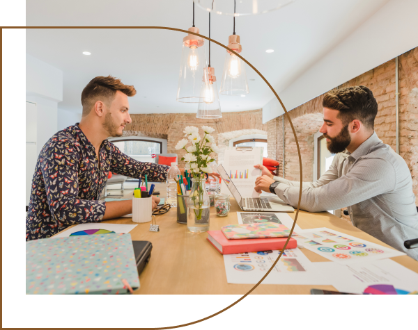
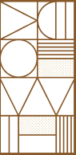
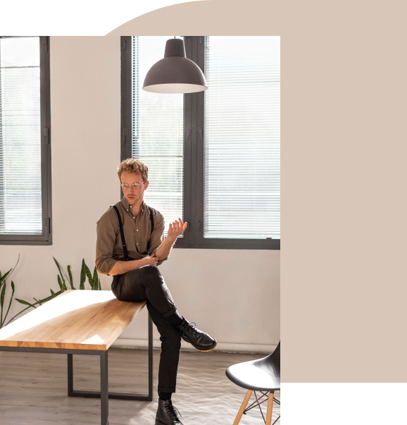
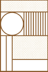
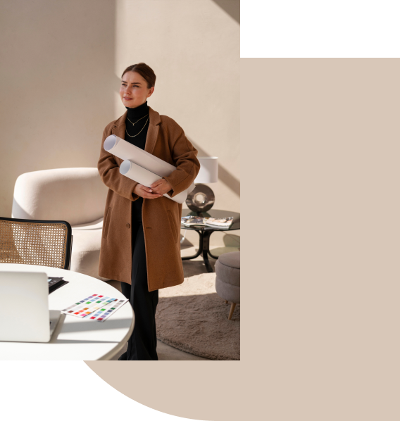
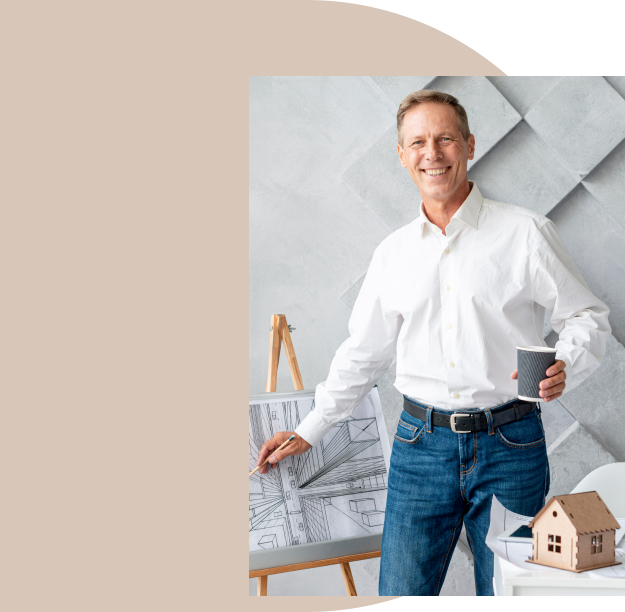

The Origin of Delicacy
Who We Are
At Delicate Design, we specialize in transforming spaces with a blend of functionality, elegance, and timeless style. Whether you're looking to refresh your home, renovate a commercial space, or completely reimagine a property, we're here to bring your vision to life. Our clients range from homeowners seeking personalized interiors to businesses in need of impactful commercial spaces that balance aesthetics with purpose.
Our Story
Delicate Design was born out of a passion for creating beautiful, intentional spaces that inspire. Founded in 1924, our journey began when the founder Mr. John Doe combined a lifelong love of design with years of experience in the interior design industry. What started as a small, boutique firm has since grown into a trusted name in the design community, known for our sharp eye for detail, creativity, and a commitment to delivering high-end, custom interiors. Our team is driven by the belief that great design can elevate everyday living, and we're proud to continue evolving with each project.
Mission & Vision
Mission
Our mission is to craft spaces that are as unique as the people who inhabit them, combining style, functionality, and a personalized touch in every project. At Delicate Design, we believe in making beautiful interiors accessible while maintaining uncompromising quality and attention to detail.
Vision
To be the leading interior design firm known for transforming spaces into inspiring environments that enhance the way people live and work.
Meet our Team
Our team is a group of passionate designers, architects, and project managers who bring a wealth of experience and creativity to every project. Here are a few of the faces behind Delicate Design
John Doe - Founder & Lead Designer
With over 40 years of experience in the interior design industry, John Doe leads the creative vision of Delicate Design. he brings a keen eye for detail and a passion for creating spaces that inspire.
 Jane Austin - Project Manager
Jane Austin ensures every project runs smoothly, from concept to completion. With a background in [relevant field], they are skilled at managing timelines, budgets, and coordinating with contractors to deliver seamless results.
Tyana Stone - Interior Designer
A specialist in [design focus, such as residential interiors], Tyana Stone brings creativity and a client-focused approach to each project, ensuring every space reflects the client's unique personality and style.
Steven king - Architect
Steven king plays a key role in translating our designs into functional spaces, focusing on layout and structure to ensure both aesthetics and practicality are achieved.
